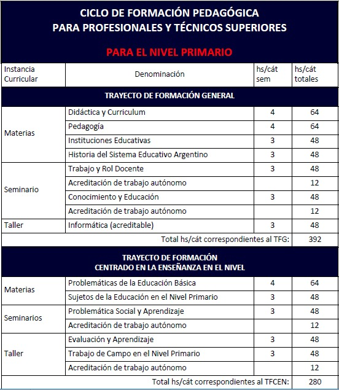
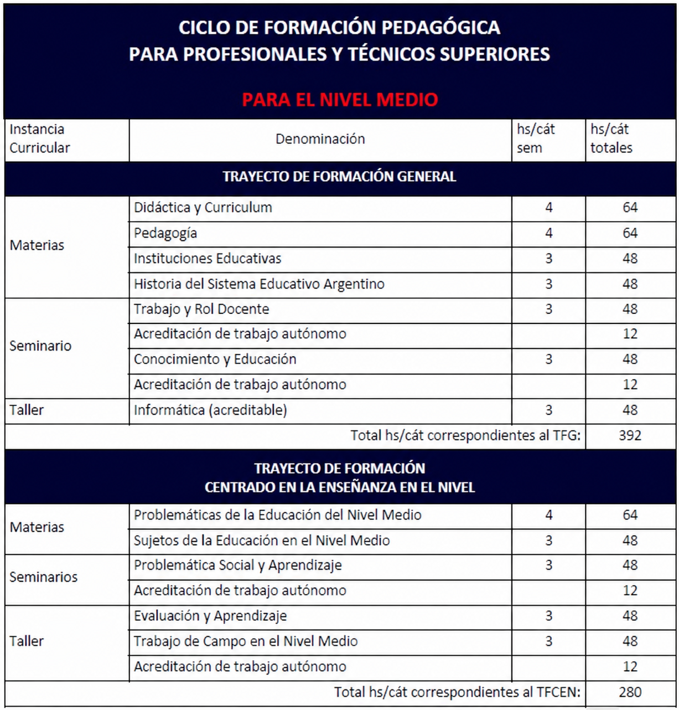

Ciclo de Formación Pedagógica para Profesionales y Técnicos Superiores
Resolución Ministerial N° 941/MEGC/07
Destinatarios
- Profesionales universitarios.
- Técnicos superiores. El título debe incluir la leyenda “Técnico Superior en...”.
- Carreras de nivel terciario con un plan de estudios de una duración mínima de 3 años y/o una carga horaria mínima de 1600 horas reloj. La carga horaria debe estar expresada en horas reloj, no en horas cátedra.
Duración
- El ciclo consta de 15 instancias curriculares.
- El plan está organizado para cursar entre 5 y 6 materias por cuatrimestre, permitiendo completar la Certificación Pedagógica para Nivel Primario o Medio en 3 cuatrimestres (1 año y medio).
- Si se cursan menos instancias, la duración se prolongará en cuatrimestres.
- Carga horaria total: 596 horas reloj / 894 horas cátedra.
Modalidad de cursada
- Presencial y cuatrimestral.
- Turno vespertino: 18:30 a 22:40.
- Si se cursan 5 o 6 instancias curriculares por cuatrimestre, se deberá asistir 3 días por semana, a definir según la oferta.
Certificación que otorga
- Certificación de Formación Pedagógica para Profesionales y Técnicos Superiores para el Nivel Primario.
- Certificación de Formación Pedagógica para Profesionales y Técnicos Superiores para el Nivel Secundario.
Materia
Se aprueba por el régimen de examen final con calificación mínima de 4 (cuatro) puntos, cumpliendo previamente los siguientes requisitos:
- Acreditar el 75% de asistencia.
- Aprobar la totalidad de los trabajos prácticos y/o instancias de trabajo autónomo.
- Aprobar las instancias de evaluación parciales.
Seminario
Se aprueba con la elaboración y defensa oral de una producción escrita, individual o grupal, con un mínimo de 6 (seis) puntos, cumpliendo previamente las condiciones establecidas en cada seminario.
Taller
Se aprueba por el régimen de promoción directa, con un mínimo de 6 (seis) puntos, según las condiciones establecidas en cada taller.
Trabajo de campo
Se aprueba con la presentación de un trabajo académico sobre una temática desarrollada en el ámbito de una institución de Nivel Primario o de Nivel Medio, articulado con una o más instancias curriculares del plan de estudios. Se evaluará con Aprobado o Desaprobado.

